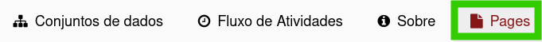
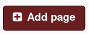
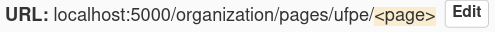
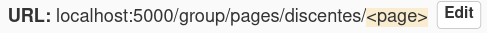
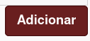

Extensão CKAN Pages: instalação e uso
A extensão Pages (ckanext-pages) permite a criação de páginas extras no CKAN a partir da interface de administradora da plataforma.
Caso você ainda não tenha o CKAN instalado, segue o tutorial CKAN no Docker: instalando o ambiente de desenvolvimento e iniciando a criação de um plugin até o capítulo “Instalando o CKAN (ambiente de desenvolvimento)”. É nesse ambiente que faremos a adição do plugin Pages.
CKAN Pages
As páginas criadas pelo CKAN Pages poderão ser filiadas a uma organização ou a um grupo, além disso podem ter a visibilidade “pública” ou “privada”. Nesse tutorial você verá como:
Instalar ckanext-pages
No terminal, execute os seguintes comandos:
- Navegue até a pasta docker-ckan/src;
- Clone o repositório da extensão:
1
git clone git@github.com:ckan/ckanext-pages.git
-
No arquivo .env:
- Ative a extensão adicionando-a na variável “CKAN__PLUGINS”, ou seja, encontre a citada variável e insira “pages” no final da linha, por exemplo:
1
CKAN__PLUGINS=envvars image_view text_view recline_view datastore pages
Essa ativação habilita a criação de páginas genéricas, sem filiação. Os demais tipos podem ser habilitados conforme orientações abaixo.
- Insira as variáveis de ambiente pertinentes para seu projeto:
- CKANEXT__PAGES__FORM - Determina o arquivo que será usado como formulário padrão para criação de novas páginas. Essa variável só deve ser usada caso você não deseje usar o formulário padrão; nesse caso, deverás criar um novo formulário e infomar seu caminho completo.
- CKANEXT__PAGES__ALLOW_HTML - Habilita a edição das páginas usando HTML. Valores possíveis: True ou False
- CKANEXT__PAGES__EDITOR - Define o editor a ser incorporado na interface de administradora do CKAN. As opções disponíveis são: medium e ckeditor
- CKANEXT__PAGES__ORGANIZATION - Habilita a criação de páginas vinculadas às organizações. Valores possíveis: True ou False.
- CKANEXT__PAGES__GROUP - Habilita a criação de páginas vinculadas aos grupos. Valores possíveis: True ou False.
Abaixo um exemplo de trecho de código, o qual usa o formulário padrão para criação de páginas e habilita a criação de páginas filiadas à organizações.
1 2 3
CKANEXT__PAGES__ALLOW_HTML=True CKANEXT__PAGES__EDITOR=ckeditor CKANEXT__PAGES__ORGANIZATION=True
- Ative a extensão adicionando-a na variável “CKAN__PLUGINS”, ou seja, encontre a citada variável e insira “pages” no final da linha, por exemplo:
- Inicie as imagens do Docker:
1
docker-compose -f docker-compose.dev.yml up
- Inicie a base de dados:
1
docker-compose -f docker-compose.dev.yml exec ckan-dev /bin/bash -c "ckan --config=$CKAN_INI pages initdb"
- Caso você tenha um tema customizado, vá até sua pasta, localize o arquivo .plugin.py e adicione o trecho de código abaixo. Isso permitirá que outras extensões atualizem o esquema de páginas e adicionem campos personalizados:
1 2 3 4 5 6 7 8 9 10 11
from ckanext.pages.interfaces import IPagesSchema class MyextPlugin(plugins.SingletonPlugin): plugins.implements(IPagesSchema) #IPagesSchema def update_pages_schema(self, schema): schema.update({ 'new_field': [ toolkit.get_validator('not_empty'), toolkit.get_validator('boolean_validator')] }) return schema
Pronto! Extensão instalada e configurada. Agora bora aprender a criar páginas =D
Criar uma nova página
É possível criar dois tipos de páginas genéricas, sem filiação:
- Blog post - Usada comumente para divulgação de notícias.
- Página - Utilizada na criação de páginas estáticas.
Para isso, no menu principal, clique no lápis para criar um blog post e na folha para criar uma página:

Caso você deseje criar uma página vinculada a uma organização ou grupo:
- Selecione:
- A organização desejada, na página “Organização” (
<seu-dominio>/organization), ou - O grupo desejado, na página “Grupos” (
<seu-dominio>/group)
- A organização desejada, na página “Organização” (
-
No menu, selecione a opção “Pages” 
- Em seguida, clique no botão “+ Add page” 
A partir daqui, os demais passos são comuns para todos os tipos de páginas:
- Especifique as seguintes informações:
- Título - Título da página;
- URL - Determine o sufixo da url da página;  
- Publish Date - Data de publicação;
- Visibilidade - Escolha entre “pública” (todas as usuárias da página poderão vê-la) ou “privada”(apenas usuárias logadas e com permissão de administradora poderão visualizá-la);
- Header order - Ordem que a página aparecerá no menu (navbar). Essa configuração funcinou para páginas genéricas, sem filiação, mas não para páginas vinculadas à organização e grupo. Então, abri essa issue no repositório da extensão. Dá uma olhadinha lá pra vê se já tem alguma resposta;
- Content - Conteúdo completo da página. É possível editá-lo usando HTML, basta selecionar a opção “Source” do menu de edição.
- Salve a página clicando no botão “Adicionar”. 
Tchanran! Páginas criadas!
Referências
Esse artigo foi escrito em parceria com Lucas Gois.
-----